美食筆記 · 來自 Obsidian · 2026-08-18 擷取
“越”美丽- Day11 鲜活海鲜随便吃
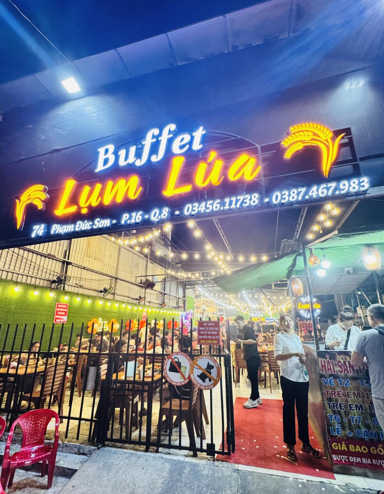
晚上帶老謝開啓「海鮮放肆模式」🦞🔥
直奔胡志明超人氣的活海鮮自助，主打一個：鮮活現撈，自己動手，豐衣足食！
- 店名：Buffet Lụm Lúa（識圖招牌讀 Lum Lúa / Luna Hải Sân）
- 地址：74 Đ. Phạm Đức Sơn, Phú Định, Hồ Chí Minh
- 營業時間：每日 15:00 – 22:00
- 電話：0387 467 983
一進門直接被震住：水池里全是活蹦亂跳的海鮮，螃蟹、羅氏蝦、各種魚類、生蠔、扇貝、花螺、蛤蜊、蟶子排排站，想吃哪個自己撈，現煮現烤現吃，快樂簡單又粗暴🦪
更離譜的是——煎、烤、蒸、炸全安排，還有一整排烤肉區，各種部位隨便挑，感覺自己不是來吃飯的，是來進貨的🥩🔥
重點來了！！！這一頓你猜多少錢？
- 38 萬越盾
- 就是那種「吃到扶牆出門還覺得自己賺了」的價格💸
胡志明活海鮮自助 Buffet Lụm Lúa：水池現撈螃蟹/羅氏蝦/生蠔/扇貝，煎烤蒸炸＋烤肉區全包，約 38 萬越盾/人（20 多澳幣），吃到扶牆出門還覺得賺了！
📸 實拍（共 11 張）
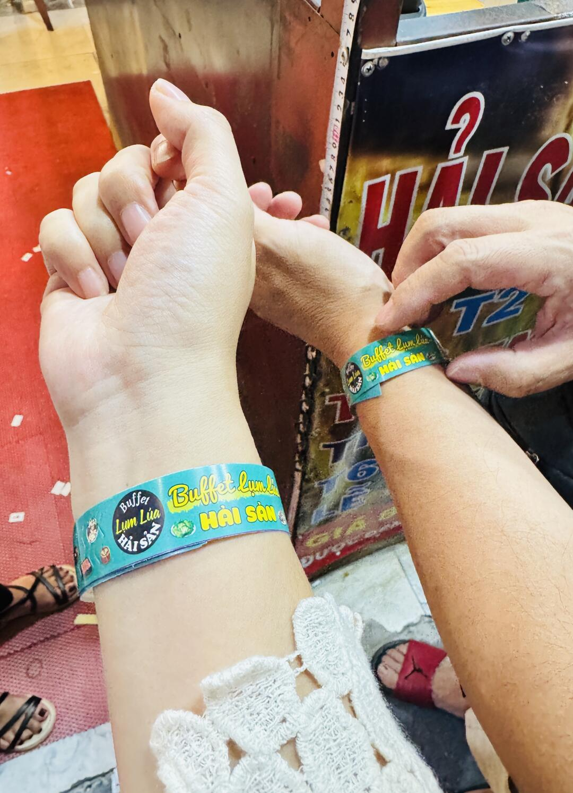
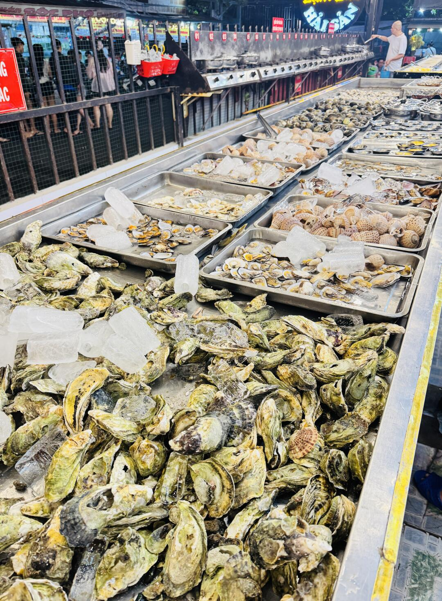
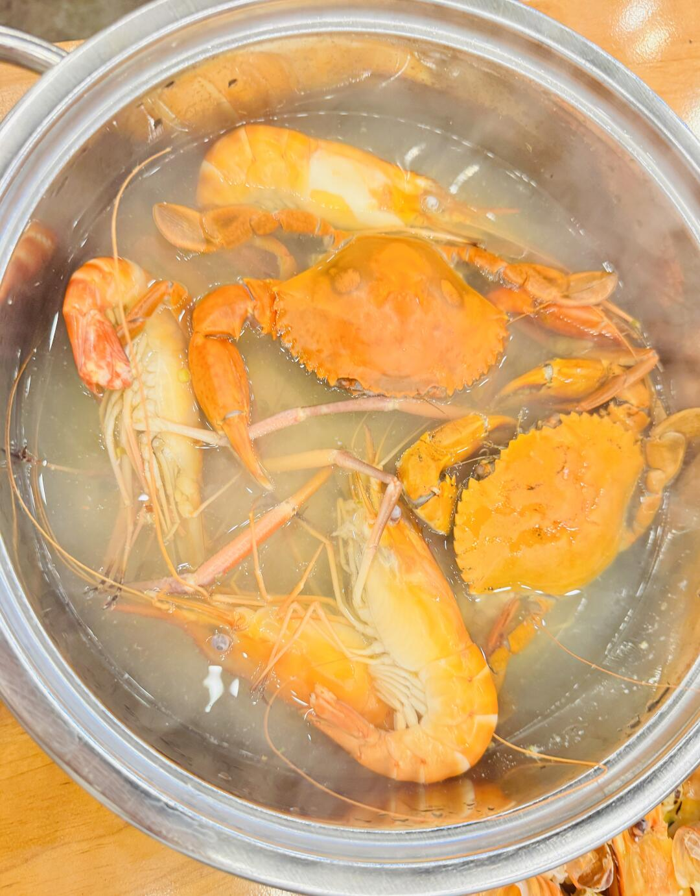
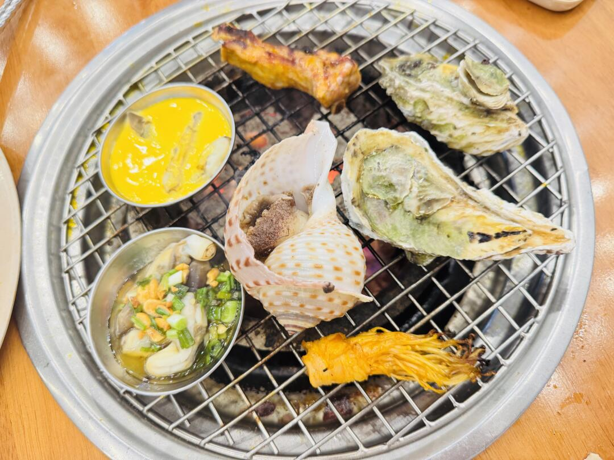
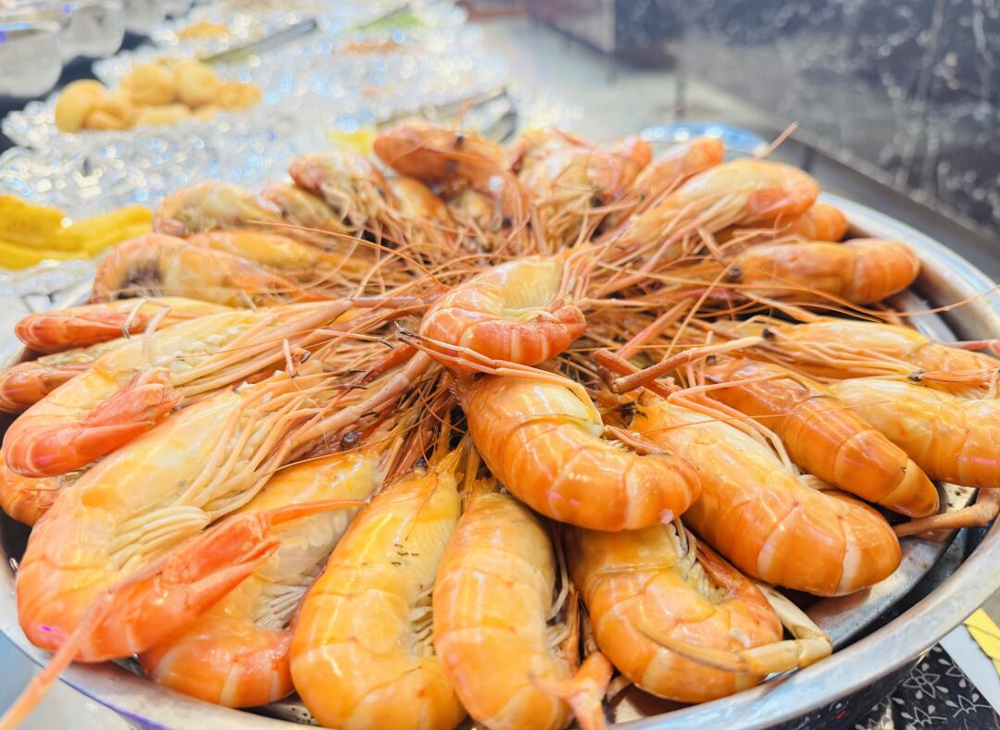
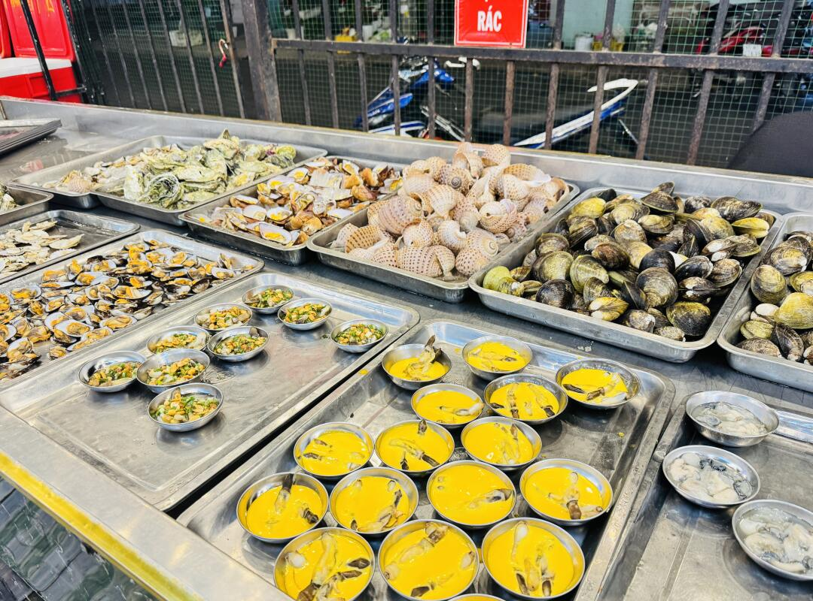
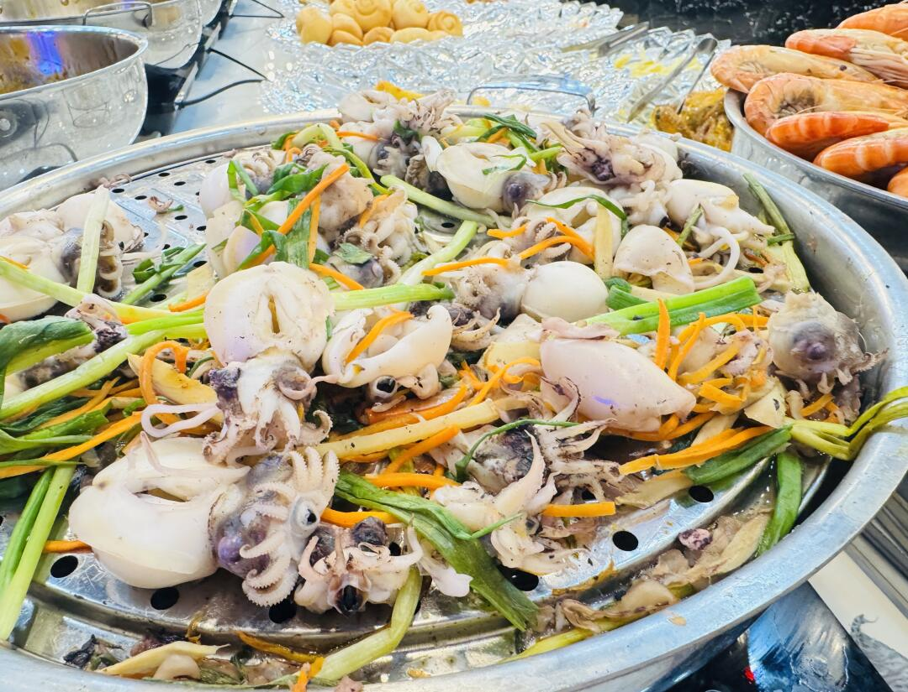
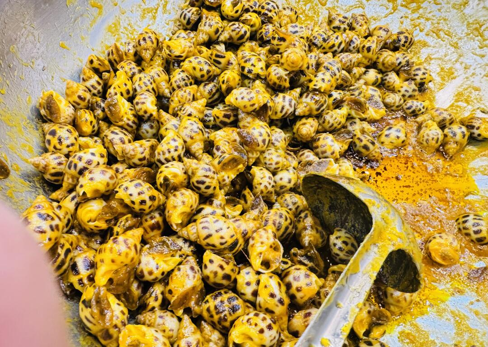
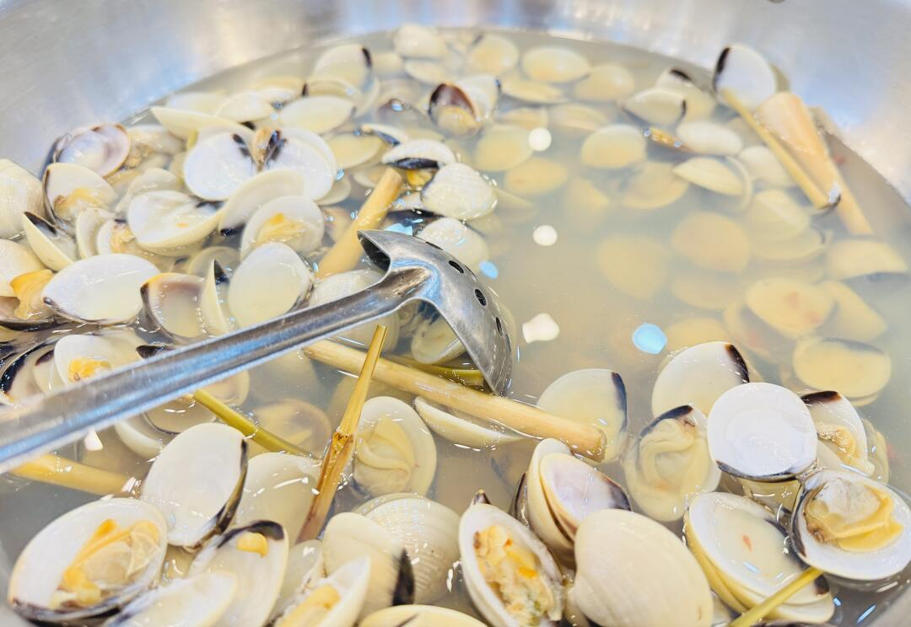
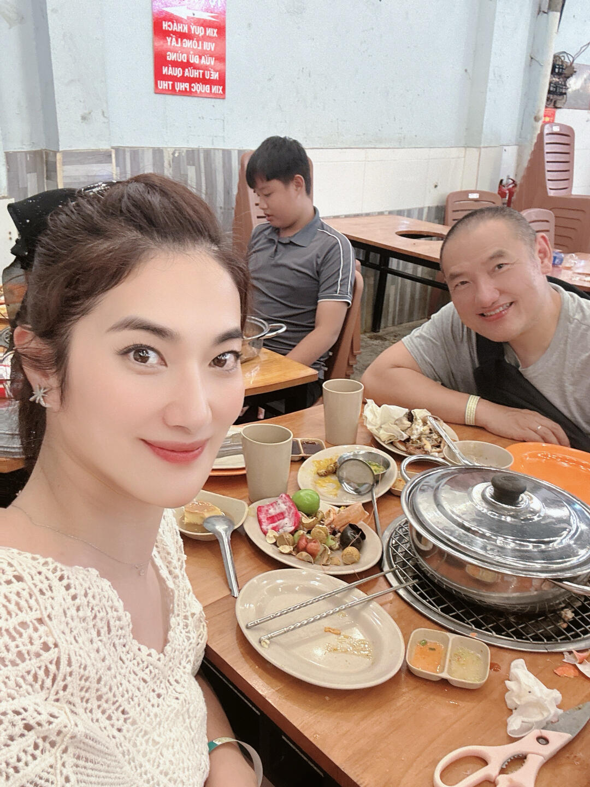
📌 資料來源：內容與全部 11 張照片來自小紅書實地帖文（Pebble 擷取至 Obsidian，2026-08-18）。
營業時間、價格與電話可能變動，出發前建議以現場或官方最新資訊為準。